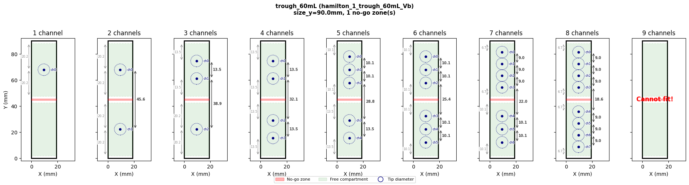
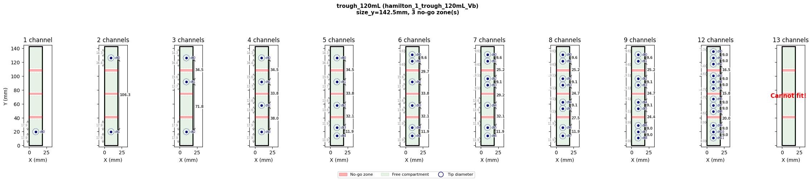
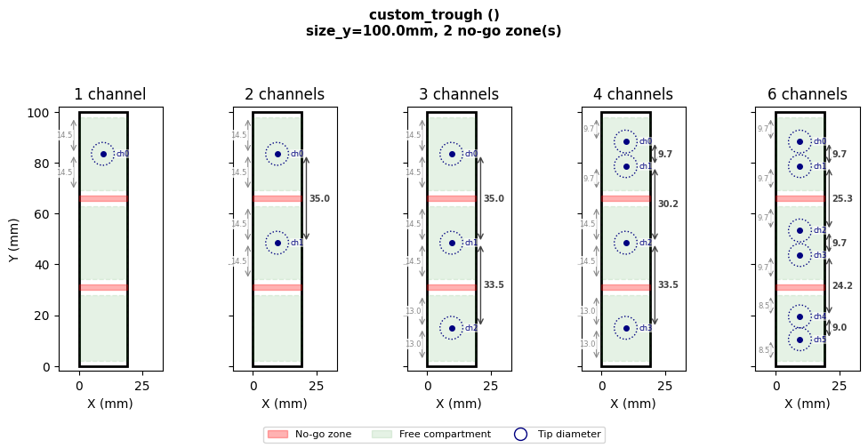
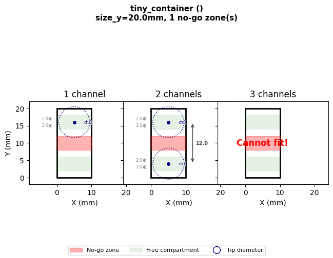
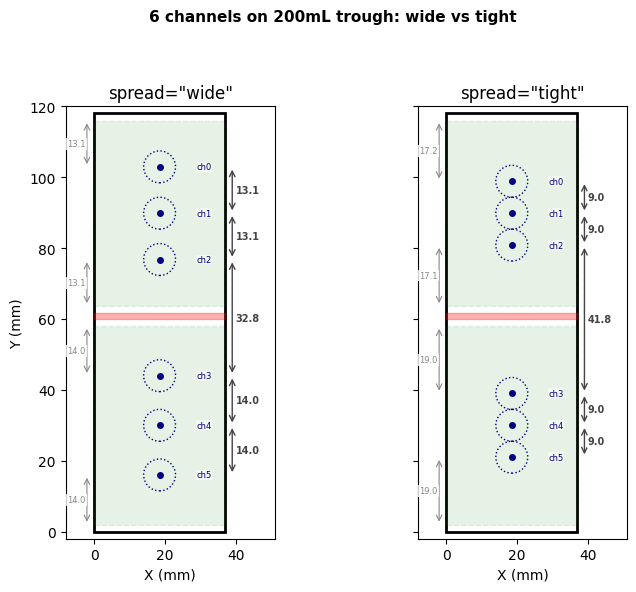
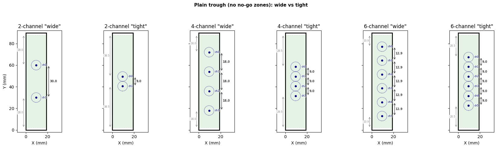
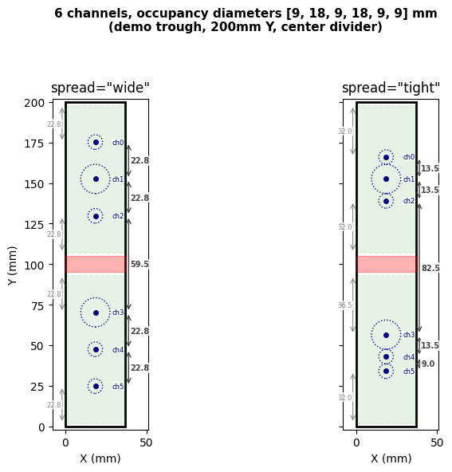
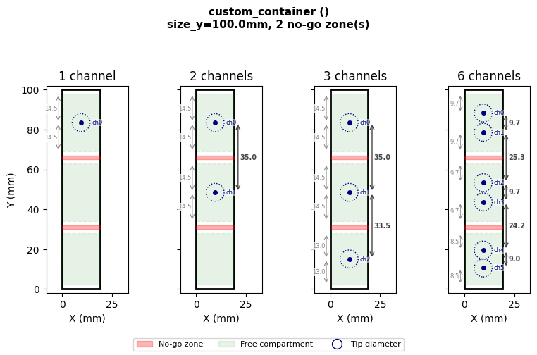
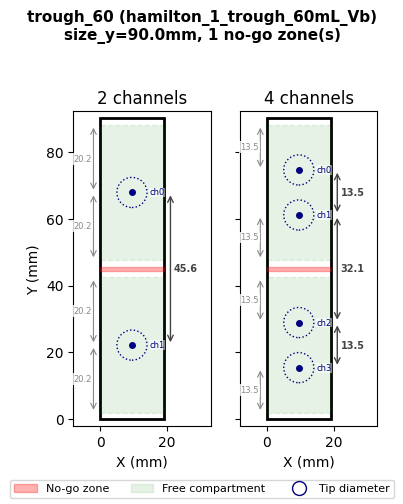

Container No-Go Zones#
Mode: Simulation (
STARChatterboxBackend) - no hardware required.Topic: Defining obstructed regions and automatic channel avoidance using
Containerno-go zones.Extra dependencies (not included in pylabrobot):
matplotlib- used for cross-section visualizations in this tutorial only
What are no-go zones?#
Some containers have internal obstructions - divider walls, support beams, baffles - where pipette tips physically cannot go. When multiple channels target the same container (e.g. aspirating from a trough with 4 channels), LiquidHandler needs to know where these obstructions are to position tips safely.
A no-go zone is a cuboid region inside a container, defined as a Tuple[Coordinate, Coordinate] - the front-left-bottom and back-right-top corners, relative to the container’s origin.
How it works#
When LiquidHandler.aspirate or .dispense targets a single container with multiple channels:
The container’s Y axis is split into compartments (free space between no-go zones)
Each compartment is shrunk by
edge_clearance(default 2mm) from each boundaryChannels are distributed across compartments center-out, then back-first
Each channel group is centered within its compartment
Note
Single-channel operations are unaffected - the tip goes to the container center as usual.
# Imports and visualization helper (collapse this cell in Jupyter via View → Collapse)
import matplotlib.pyplot as plt
import matplotlib.patches as mpatches
from matplotlib.lines import Line2D
from pylabrobot.resources.container import Container
from pylabrobot.resources.coordinate import Coordinate
from pylabrobot.liquid_handling.channel_positioning import (
_get_compartments,
compute_channel_offsets,
MIN_SPACING_EDGE,
)
MIN_CHANNEL_SPACING = 9.0 # mm, minimum center-to-center distance between adjacent channels
CHANNEL_DIAMETER = 9.0 # mm, minimum center-to-center spacing between adjacent channels
def _draw_container_axis(ax, container, n_ch, spread="wide", channel_spacings=None):
"""Draw a single container cross-section with channels on the given axis."""
from pylabrobot.liquid_handling.errors import ChannelsDoNotFitError
size_y = container.get_absolute_size_y()
size_x = container.get_absolute_size_x()
center_y = size_y / 2
compartments = _get_compartments(container)
label_bbox = dict(facecolor="white", alpha=0.5, edgecolor="none", pad=0.3)
dist_bbox = dict(facecolor="white", alpha=0.8, edgecolor="none", pad=1)
# Container outline
ax.add_patch(plt.Rectangle((0, 0), size_x, size_y, fill=False, edgecolor="black", linewidth=2))
# No-go zones (red)
for flb, brt in container.no_go_zones:
ax.add_patch(plt.Rectangle((0, flb.y), size_x, brt.y - flb.y,
facecolor="red", alpha=0.3, edgecolor="red", linewidth=1))
# Free compartments (green)
for comp_lo, comp_hi in compartments:
ax.add_patch(plt.Rectangle((0, comp_lo), size_x, comp_hi - comp_lo,
facecolor="green", alpha=0.1, edgecolor="green",
linewidth=1, linestyle="--"))
# Channel positions
try:
kwargs = dict(spread=spread)
if channel_spacings is not None:
kwargs["channel_spacings"] = channel_spacings
offsets = compute_channel_offsets(container, n_ch, **kwargs)
tip_ys = []
for i, o in enumerate(offsets):
tip_y = center_y + o.y
tip_ys.append(tip_y)
if channel_spacings is not None:
d = channel_spacings[i]
else:
d = CHANNEL_DIAMETER
ax.add_patch(plt.Circle(
(size_x / 2, tip_y), d / 2,
facecolor="none", edgecolor="navy", linewidth=1, linestyle=":"))
ax.plot(size_x / 2, tip_y, "o", color="navy", markersize=4, zorder=5)
ax.text(size_x * 0.78, tip_y, f"ch{i}", ha="left", va="center",
fontsize=6, color="navy", bbox=label_bbox, zorder=6)
tip_ys_sorted = sorted(tip_ys)
# Channel-to-channel distances (right side)
brace_x = size_x + 2
for i in range(len(tip_ys_sorted) - 1):
y_lo = tip_ys_sorted[i]
y_hi = tip_ys_sorted[i + 1]
gap = y_hi - y_lo
mid = (y_lo + y_hi) / 2
ax.annotate("", xy=(brace_x, y_hi), xytext=(brace_x, y_lo),
arrowprops=dict(arrowstyle="<->", color="#444", lw=1))
ax.text(brace_x + 1, mid, f"{gap:.1f}", ha="left", va="center",
fontsize=7, color="#444", fontweight="bold", bbox=dist_bbox)
# Edge distances (left side)
edge_x = -2
for comp_lo, comp_hi in compartments:
group = [y for y in tip_ys_sorted if comp_lo - 0.1 <= y <= comp_hi + 0.1]
if not group:
continue
edge_lo = group[0] - comp_lo
if edge_lo > 0.5:
mid = (comp_lo + group[0]) / 2
ax.annotate("", xy=(edge_x, group[0]), xytext=(edge_x, comp_lo),
arrowprops=dict(arrowstyle="<->", color="#888", lw=0.8))
ax.text(edge_x - 0.5, mid, f"{edge_lo:.1f}", ha="right", va="center",
fontsize=6, color="#888", bbox=dist_bbox)
edge_hi = comp_hi - group[-1]
if edge_hi > 0.5:
mid = (group[-1] + comp_hi) / 2
ax.annotate("", xy=(edge_x, comp_hi), xytext=(edge_x, group[-1]),
arrowprops=dict(arrowstyle="<->", color="#888", lw=0.8))
ax.text(edge_x - 0.5, mid, f"{edge_hi:.1f}", ha="right", va="center",
fontsize=6, color="#888", bbox=dist_bbox)
except ChannelsDoNotFitError:
ax.text(size_x / 2, size_y / 2, "Cannot fit!", ha="center", va="center",
fontsize=12, color="red", fontweight="bold")
ax.set_xlim(-8, size_x + 14)
ax.set_ylim(-2, size_y + 2)
ax.set_xlabel("X (mm)")
ax.set_aspect("equal")
def plot_container_cross_section(container, num_channels_list, **kwargs):
"""Plot container cross-sections for multiple channel counts."""
n_plots = len(num_channels_list)
fig, axes = plt.subplots(1, n_plots, figsize=(2.2 * n_plots, 5), squeeze=False)
axes = axes[0]
for ax, n_ch in zip(axes, num_channels_list):
_draw_container_axis(ax, container, n_ch, **kwargs)
ax.set_title(f"{n_ch} channel{'s' if n_ch != 1 else ''}")
if ax != axes[0]:
ax.set_yticklabels([])
else:
ax.set_ylabel("Y (mm)")
legend_handles = [
mpatches.Patch(facecolor="red", alpha=0.3, edgecolor="red", label="No-go zone"),
mpatches.Patch(facecolor="green", alpha=0.1, edgecolor="green", label="Free compartment"),
Line2D([0], [0], marker="o", color="w", markerfacecolor="none", markeredgecolor="navy",
markersize=10, linestyle="None", label="Tip diameter"),
]
fig.legend(handles=legend_handles, loc="lower center", ncol=3, fontsize=8)
size_y = container.get_absolute_size_y()
name = container.name
model = container.model or ""
fig.suptitle(f"{name} ({model})\nsize_y={size_y}mm, {len(container.no_go_zones)} no-go zone(s)",
fontsize=11, fontweight="bold")
fig.tight_layout(rect=[0, 0.06, 1, 0.92])
fig.subplots_adjust(wspace=-0.15)
plt.show()
def plot_spread_comparison(container, n_ch, title=None, channel_spacings=None):
"""Plot wide vs tight side-by-side for a single channel count."""
fig, axes = plt.subplots(1, 2, figsize=(8, 6), squeeze=False)
axes = axes[0]
for ax, mode in zip(axes, ["wide", "tight"]):
_draw_container_axis(ax, container, n_ch, spread=mode, channel_spacings=channel_spacings)
ax.set_title(f'spread="{mode}"')
if ax != axes[0]:
ax.set_yticklabels([])
else:
ax.set_ylabel("Y (mm)")
if title is None:
title = f"{n_ch} channels on {container.name}: wide vs tight"
fig.suptitle(title, fontsize=11, fontweight="bold")
fig.tight_layout(rect=[0, 0, 1, 0.93])
fig.subplots_adjust(wspace=-0.1)
plt.show()
Real-world examples: Hamilton troughs#
The Hamilton trough family has internal support structures that create no-go zones. These were measured from physical troughs using calipers (top of beams) and visual inspection through the transparent walls (base of tapered beams).
60 mL trough - 1 center divider#
The hamilton_1_trough_60mL_Vb has a single center support wall (~1.2mm wide), creating 2 compartments.
from pylabrobot.resources.hamilton.troughs import hamilton_1_trough_60mL_Vb
trough_60 = hamilton_1_trough_60mL_Vb(name="trough_60mL")
print(f"Container: {trough_60.name}, size_y={trough_60.get_absolute_size_y()}mm")
print(f"No-go zones: {trough_60.no_go_zones}")
print(f"Compartments: {_get_compartments(trough_60)}")
plot_container_cross_section(trough_60, [1, 2, 3, 4, 5, 6, 7, 8, 9])
Container: trough_60mL, size_y=90.0mm
No-go zones: [(Coordinate(x=0, y=44.4, z=5.0), Coordinate(x=19.0, y=45.6, z=60.25))]
Compartments: [(2.0, 42.4), (47.6, 88.0)]

120 mL trough - 3 tapered support beams#
The hamilton_1_trough_120mL_Vb has 3 internal support beams (~2.5mm wide at the base, ~0.8mm at the top), creating 4 compartments. The no-go zones use the base width since that is the worst case for pipette tip clearance.
Dimensional breakdown (from outer y=0):
Element |
Y range (mm) |
Size (mm) |
Modelled as |
|---|---|---|---|
Back wall |
141.1 - 142.5 |
1.4 |
Not modelled (included in |
Compartment 3 |
109.8 - 141.1 |
31.3 |
Free space |
Beam 3 |
107.3 - 109.8 |
2.5 |
|
Compartment 2 |
76.0 - 107.3 |
31.3 |
Free space |
Beam 2 |
73.5 - 76.0 |
2.5 |
|
Compartment 1 |
42.2 - 73.5 |
31.3 |
Free space |
Beam 1 |
39.7 - 42.2 |
2.5 |
|
Compartment 0 |
1.2 - 39.7 |
38.5 |
Free space |
Front wall |
0 - 1.2 |
1.2 |
Not modelled (included in |
Note
size_y=142.5is the **outer** dimension of the trough. The front and back walls are not modelled as no-go zones - they are accounted for by theedge_clearance` parameter during channel positioning.
The internal beams are modelled as no-go zones because they obstruct pipette access within the container’s interior.
from pylabrobot.resources.hamilton.troughs import hamilton_1_trough_120mL_Vb
trough_120 = hamilton_1_trough_120mL_Vb(name="trough_120mL")
print(f"Container: {trough_120.name}, size_y={trough_120.get_absolute_size_y()}mm")
print(f"No-go zones: {trough_120.no_go_zones}")
print(f"Compartments: {_get_compartments(trough_120)}")
plot_container_cross_section(trough_120, [1, 2, 3, 4, 5, 6, 7, 8, 9, 12, 13])
Container: trough_120mL, size_y=142.5mm
No-go zones: [(Coordinate(x=0, y=39.7, z=12.0), Coordinate(x=19.0, y=42.2, z=70.0)), (Coordinate(x=0, y=73.5, z=12.0), Coordinate(x=19.0, y=76.0, z=70.0)), (Coordinate(x=0, y=107.3, z=12.0), Coordinate(x=19.0, y=109.8, z=70.0))]
Compartments: [(2.0, 37.7), (44.2, 71.5), (78.0, 105.3), (111.8, 140.5)]

Defining no-go zones on a new container#
Any Container (or subclass: Trough, Well, Tube, etc.) accepts a no_go_zones parameter. Each zone is a pair of Coordinates - the front-left-bottom and back-right-top corners of the obstructed cuboid, relative to the container’s outer origin.
from pylabrobot.resources.trough import Trough, TroughBottomType
# Define a custom trough with two dividers
custom_trough = Trough(
name="custom_trough",
size_x=19.0,
size_y=100.0,
size_z=50.0,
max_volume=80_000,
bottom_type=TroughBottomType.V,
no_go_zones=[
(Coordinate(0, 30.0, 0), Coordinate(19.0, 32.0, 50.0)), # divider 1
(Coordinate(0, 65.0, 0), Coordinate(19.0, 67.0, 50.0)), # divider 2
],
)
print(f"Container: {custom_trough.name}, size_y={custom_trough.get_absolute_size_y()}mm")
print(f"Compartments: {_get_compartments(custom_trough)}")
plot_container_cross_section(custom_trough, [1, 2, 3, 4, 6])
Container: custom_trough, size_y=100.0mm
Compartments: [(2.0, 28.0), (34.0, 63.0), (69.0, 98.0)]

Edge clearance and tip size#
edge_clearance (default: MIN_SPACING_EDGE = 2mm) controls how close the automatic positioning places tip centers to compartment boundaries. It is a positioning safety margin, not a physical gate.
It does not prevent a pipette from entering a container. Whether a tip physically fits is determined by tip diameter vs. container opening - e.g. a 1000 µL tip won’t fit into a 1536-wellplate well. This is the user’s responsibility to verify when choosing tips and containers.
# A narrow container where compartments are smaller than the default 9mm channel spacing.
# 1 channel per compartment still works - the channel is simply centered.
# 2 channels in one compartment would fail (needs 9mm, only 4mm available).
from pylabrobot.liquid_handling.errors import ChannelsDoNotFitError
tiny = Container(
name="tiny_container", size_x=10, size_y=20, size_z=10,
no_go_zones=[(Coordinate(0, 8, 0), Coordinate(10, 12, 10))],
)
print(f"Container size_y: {tiny.get_absolute_size_y()}mm")
print(f"No-go zone: Y={8}-{12}mm -> two 8mm raw compartments")
print(f"After 2mm edge clearance: compartments = {_get_compartments(tiny)}")
print(f"1 channel: {compute_channel_offsets(tiny, 1)}")
print(f"2 channels (1 per compartment): {compute_channel_offsets(tiny, 2)}")
try:
print(f"3 channels: {compute_channel_offsets(tiny, 3)}")
except ChannelsDoNotFitError as e:
print(f"3 channels (needs 2 in one 4mm compartment): ChannelsDoNotFitError - {e}")
plot_container_cross_section(tiny, [1, 2, 3])
Container size_y: 20.0mm
No-go zone: Y=8-12mm -> two 8mm raw compartments
After 2mm edge clearance: compartments = [(2.0, 6.0), (14.0, 18.0)]
1 channel: [Coordinate(x=0, y=6.0, z=0)]
2 channels (1 per compartment): [Coordinate(x=0, y=6.0, z=0), Coordinate(x=0, y=-6.0, z=0)]
3 channels (needs 2 in one 4mm compartment): ChannelsDoNotFitError - Cannot distribute channels across compartments while respecting spacing constraints.

Spread modes with no-go zones#
The spread parameter on aspirate and dispense controls how channels are positioned within each compartment:
spread="wide"(default) - channels are spread as far apart as possible within each compartmentspread="tight"- channels are packed at minimum spacing (9mm), centered in each compartmentspread="custom"- no-go zones are ignored entirely; the user controls all positioning via offsets
# Compare wide vs tight spread on the 200mL trough (2 large compartments, 6 channels)
from pylabrobot.resources.hamilton.troughs import hamilton_1_trough_200mL_Vb
trough_200 = hamilton_1_trough_200mL_Vb(name="trough_200mL")
print(f"Compartments: {_get_compartments(trough_200)}")
for mode in ["wide", "tight"]:
offsets = compute_channel_offsets(trough_200, 6, spread=mode)
positions = [f"{o.y:+.1f}" for o in offsets]
print(f"spread={mode!r:8s} -> offsets (from center): {positions}")
Compartments: [(2.0, 58.0), (63.7, 116.0)]
spread='wide' -> offsets (from center): ['+43.9', '+30.9', '+17.8', '-15.0', '-29.0', '-43.0']
spread='tight' -> offsets (from center): ['+39.9', '+30.9', '+21.9', '-20.0', '-29.0', '-38.0']
plot_spread_comparison(trough_200, 6, title="6 channels on 200mL trough: wide vs tight")

Container without no-go zones#
compute_channel_offsets also works on plain containers. Without no-go zones, it falls through to standard wide/tight spread across the full Y axis.
# A plain trough without no-go zones
plain_trough = Trough(
name="plain_trough",
size_x=19.0,
size_y=90.0,
size_z=65.0,
max_volume=60_000,
)
for n in [2, 4, 6]:
for mode in ["wide", "tight"]:
offsets = compute_channel_offsets(plain_trough, n, spread=mode)
positions = [f"{o.y:+.1f}" for o in offsets]
print(f"{n}-channel {mode:6s} -> {positions}")
# Side-by-side: wide vs tight for 2, 4, 6 channels
channel_counts = [2, 4, 6]
n_pairs = len(channel_counts)
fig, axes = plt.subplots(1, n_pairs * 2, figsize=(3 * n_pairs * 2, 5), squeeze=False)
axes = axes[0]
for pair_idx, n_ch in enumerate(channel_counts):
for mode_idx, mode in enumerate(["wide", "tight"]):
ax = axes[pair_idx * 2 + mode_idx]
_draw_container_axis(ax, plain_trough, n_ch, spread=mode)
ax.set_title(f'{n_ch}-channel "{mode}"')
if pair_idx == 0 and mode_idx == 0:
ax.set_ylabel("Y (mm)")
else:
ax.set_yticklabels([])
fig.suptitle("Plain trough (no no-go zones): wide vs tight", fontsize=11, fontweight="bold")
fig.tight_layout(rect=[0, 0, 1, 0.93])
fig.subplots_adjust(wspace=-0.05)
plt.show()
2-channel wide -> ['+15.0', '-15.0']
2-channel tight -> ['+4.5', '-4.5']
4-channel wide -> ['+27.0', '+9.0', '-9.0', '-27.0']
4-channel tight -> ['+13.5', '+4.5', '-4.5', '-13.5']
6-channel wide -> ['+32.1', '+19.3', '+6.4', '-6.4', '-19.3', '-32.1']
6-channel tight -> ['+22.5', '+13.5', '+4.5', '-4.5', '-13.5', '-22.5']

Per-channel occupancy diameters#
Each channel has an occupancy diameter - the physical space it takes up. On a Hamilton STAR, 1mL channels have a 9mm occupancy diameter, while 5mL channels have 18mm. The required gap between two adjacent channels is the sum of their radii: spacing[i]/2 + spacing[j]/2.
compute_channel_offsets accepts channel_spacings - one occupancy diameter per channel - and computes all gaps accordingly.
# 6 channels with mixed occupancy diameters on a wide demo trough
# 4 channels with 9mm occupancy (1mL), 2 with 18mm occupancy (5mL) - e.g. mixed Hamilton
mixed_spacings = [9.0, 18.0, 9.0, 18.0, 9.0, 9.0] # 6 occupancy diameters for 6 channels
# Create a wider trough to clearly show the difference between wide and tight
demo_trough = Trough(
name="demo_trough",
size_x=37.0,
size_y=200.0,
size_z=95.0,
max_volume=200_000,
bottom_type=TroughBottomType.V,
no_go_zones=[
(Coordinate(0, 95, 0), Coordinate(37.0, 105, 95.0)), # center divider
],
)
print(f"Compartments: {_get_compartments(demo_trough)}")
for mode in ["wide", "tight"]:
offsets = compute_channel_offsets(demo_trough, 6, spread=mode, channel_spacings=mixed_spacings)
centers = sorted([demo_trough.get_size_y() / 2 + o.y for o in offsets])
gaps = [round(centers[i + 1] - centers[i], 1) for i in range(len(centers) - 1)]
print(f"spread={mode!r:8s} centers={[f'{c:.1f}' for c in centers]} gaps={gaps}")
plot_spread_comparison(
demo_trough, 6,
title="6 channels, occupancy diameters [9, 18, 9, 18, 9, 9] mm\n(demo trough, 200mm Y, center divider)",
channel_spacings=mixed_spacings,
)
Compartments: [(2.0, 93.0), (107.0, 198.0)]
spread='wide' centers=['24.8', '47.5', '70.2', '129.8', '152.5', '175.2'] gaps=[22.8, 22.8, 59.5, 22.8, 22.8]
spread='tight' centers=['34.0', '43.0', '56.5', '139.0', '152.5', '166.0'] gaps=[9.0, 13.5, 82.5, 13.5, 13.5]

Try it yourself#
Edit the parameters below to experiment with any container geometry:
# --- Edit these ---
CONTAINER_SIZE_X = 19.0 # mm
CONTAINER_SIZE_Y = 100.0 # mm
CONTAINER_SIZE_Z = 50.0 # mm
# List of (y_start, y_end) pairs for no-go zones
NO_GO_Y_RANGES = [
(30, 32), # divider 1
(65, 67), # divider 2
]
NUM_CHANNELS = [1, 2, 3, 6] # channel counts to plot
# ------------------
no_go_zones = [
(Coordinate(0, y_lo, 0), Coordinate(CONTAINER_SIZE_X, y_hi, CONTAINER_SIZE_Z))
for y_lo, y_hi in NO_GO_Y_RANGES
]
custom = Container(
name="custom_container",
size_x=CONTAINER_SIZE_X,
size_y=CONTAINER_SIZE_Y,
size_z=CONTAINER_SIZE_Z,
no_go_zones=no_go_zones,
)
print(f"Compartments: {_get_compartments(custom)}")
for n in NUM_CHANNELS:
try:
result = compute_channel_offsets(custom, n)
status = [f"y={o.y:+.1f}" for o in result]
except ChannelsDoNotFitError:
status = "Cannot fit"
print(f" {n} ch: {status}")
plot_container_cross_section(custom, NUM_CHANNELS)
Compartments: [(2.0, 28.0), (34.0, 63.0), (69.0, 98.0)]
1 ch: ['y=+33.5']
2 ch: ['y=+33.5', 'y=-1.5']
3 ch: ['y=+33.5', 'y=-1.5', 'y=-35.0']
6 ch: ['y=+38.3', 'y=+28.7', 'y=+3.3', 'y=-6.3', 'y=-30.5', 'y=-39.5']

End-to-end simulation#
Below we set up a full LiquidHandler with STARChatterboxBackend (simulation - no hardware needed) to verify that aspirate correctly distributes channels around no-go zones.
The Hamilton-specific trough definitions (hamilton_1_trough_60mL_Vb, hamilton_1_trough_120mL_Vb) already have no_go_zones pre-configured - you don’t need to define them manually when using these resources.
from pylabrobot.liquid_handling import LiquidHandler
from pylabrobot.liquid_handling.backends.hamilton.STAR_chatterbox import STARChatterboxBackend
from pylabrobot.resources.hamilton import STARLetDeck
from pylabrobot.resources.hamilton.tip_racks import hamilton_96_tiprack_1000uL_filter
from pylabrobot.resources.hamilton.trough_carriers import Trough_CAR_5R60_A00
from pylabrobot.resources.hamilton.troughs import hamilton_1_trough_60mL_Vb
from pylabrobot.resources import TIP_CAR_480_A00, set_tip_tracking, set_volume_tracking
set_tip_tracking(True)
set_volume_tracking(True)
backend = STARChatterboxBackend(num_channels=8)
deck = STARLetDeck()
lh = LiquidHandler(backend=backend, deck=deck)
await lh.setup()
tip_car = TIP_CAR_480_A00(name="tip_carrier")
tip_car[0] = hamilton_96_tiprack_1000uL_filter(name="tips_1000")
deck.assign_child_resource(tip_car, rails=1)
trough_car = Trough_CAR_5R60_A00(name="trough_carrier")
trough_car[0] = hamilton_1_trough_60mL_Vb(name="trough_60")
deck.assign_child_resource(trough_car, rails=10)
trough = deck.get_resource("trough_60")
print(f"Trough: {trough.name}")
print(f"Pre-configured no-go zones: {trough.no_go_zones}")
print(f"Compartments: {_get_compartments(trough)}")
Trough: trough_60
Pre-configured no-go zones: [(Coordinate(x=0, y=44.4, z=5.0), Coordinate(x=19.0, y=45.6, z=60.25))]
Compartments: [(2.0, 42.4), (47.6, 88.0)]
Aspirate with 2 and 4 channels#
Pick up tips, fill the trough, then aspirate. The chatterbox backend prints raw firmware commands - the yp values show absolute Y positions in 0.1mm units. Verify that channels land in separate compartments and avoid the divider at Y=44-46mm.
tip_rack = deck.get_resource("tips_1000")
await lh.pick_up_tips(tip_rack["A1:D1"])
trough.tracker.set_volume(50_000)
# Show expected offsets before aspirating
for n in [2, 4]:
offsets = compute_channel_offsets(trough, n)
print(f"{n} channels -> offsets: {[f'{o.y:+.1f}mm' for o in offsets]}")
plot_container_cross_section(trough, [2, 4])
C0TTid0001tt01tf1tl0871tv10650tg3tu0
C0TPid0002xp01179 01179 01179 01179 00000&yp1458 1368 1278 1188 0000&tm1 1 1 1 0&tt01tp2266tz2166th2450td0
2 channels -> offsets: ['+22.8mm', '-22.8mm']
4 channels -> offsets: ['+29.5mm', '+16.1mm', '-16.1mm', '-29.5mm']

await lh.stop()
print("Simulation stopped.")
Simulation stopped.